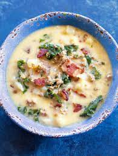

Zuppa Toscana

Low Carb Olive Garden Favorite
2 Slices of Bacon
1 pound of Hot Italian Sausage
32 Ounces of Chicken Broth
8 Ounces of Heavy Whipping Cream
1 Head of Cauliflower
1 Bunch of Kale
1 tbs Chili powder
1 ts Ground Fennel
Salt and Pepper to taste
Instructions
Dice Bacon and brown in a skillet over medium heat
When Bacon starts to get crispy, add Italian Sausage to the pan and cook until brown
While sausage is browning, add your chicken broth to a soup pan and bring to a light boil
Wash and cut the head of cauliflower into small bite sized chunks and add them to broth
Drain Sausage and bacon in a collander and add it to the broth along with seasonings
Wash and chop kale
When Cauliflower is tender enough to be easily pierced by a fork, add the kale
Cook until the kale is tender, about 10 minutes
Turn off heat and finish with heavy whipping cream
Top with parmesean cheese if desired